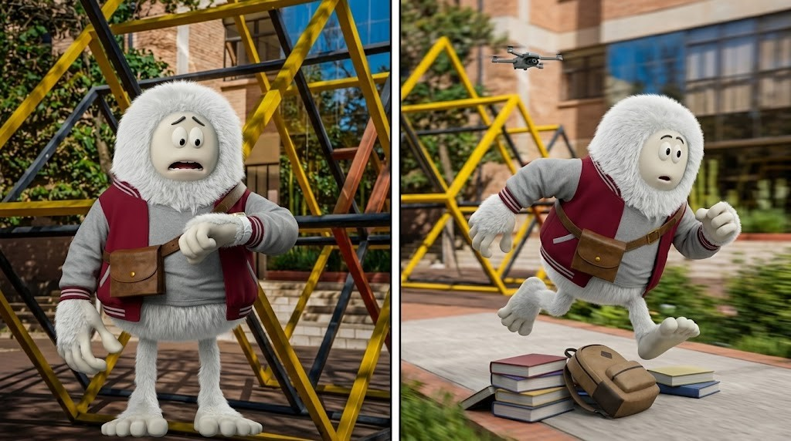
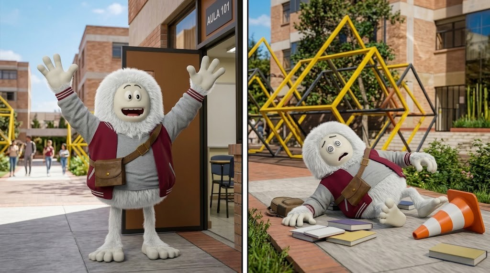

CONTEXTO NARRATIVO
El Campus y la Problemática Inicial
La ambientación recrea el campus universitario con sus pasillos interiores de piso cerámico, dispensadores de agua, jardines con estructuras geométricas y puertas de aulas y laboratorios.
Al principio, el Yeti Universitario camina tranquilo con su chamarra guinda y su bolso cruzado, confiado de que tiene tiempo de sobra. Sin embargo, al mirar su reloj de pulsera en el patio, entra en pánico: faltan muy pocos minutos para que se cierre el laboratorio de desarrollo.
ARCO ARGUMENTAL
La Carrera por el Éxito
Para llegar a la defensa final y aprobar la asignatura, el Yeti emprende una veloz carrera continua esquivando todos los objetos cotidianos olvidados por otros estudiantes en el camino.
La partida construye una secuencia única en tiempo real: los obstáculos aparecen de forma aleatoria exigiendo reflejos rápidos para conseguir la victoria (llegar al Aula 101) o enfrentar la derrota tras tropezar y agotar sus vidas.

El descubrimiento: El Yeti mira su reloj y asustado comienza a correr por el patio saltando pilas de libros y mochilas.

El desenlace: Celebración al cruzar la puerta del aula de cómputo o el agotamiento tras tropezar en el camino.